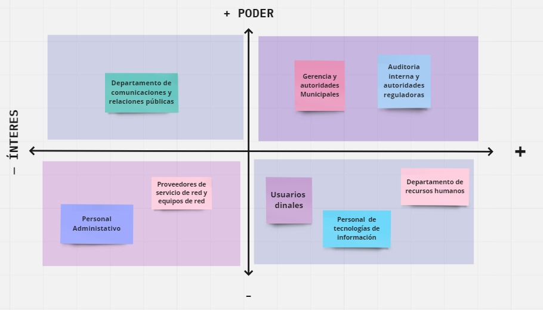

El análisis de interesados, también conocido como "análisis de stakeholders" o "análisis de partes interesadas", es una técnica utilizada en la gestión de proyectos y la toma de decisiones para identificar, comprender y evaluar a las personas, grupos u organizaciones que pueden tener un interés, influencia o impacto en un proyecto, iniciativa o proceso.
El objetivo principal del análisis de interesados es identificar quiénes son los interesados relevantes y comprender sus necesidades, expectativas, intereses y preocupaciones con respecto al proyecto o la situación en cuestión. Esto permite gestionar de manera efectiva las relaciones con los interesados y tomar decisiones informadas para satisfacer sus necesidades y maximizar el éxito del proyecto.
| Item | Cargo | Descripcion |
|---|---|---|
| 1 | Gerencia y autoridades municipales | Son los responsables de la toma de decisiones y la dirección estratégica de la Municipalidad. |
| 2 | Personal de Tecnologías de Información | Equipo de profesionales de TI encargados de la gestión y el mantenimiento de la infraestructura de tecnología de la Municipalidad. |
| 3 | Personal Administrativo | Usuarios de la red en las diferentes áreas de la Municipalidad que realizan tareas administrativas. |
| 4 | Proveedores de servicios de red y equipos de red | Empresas o proveedores de servicios de TI involucrados en el diseño e implementación de la infraestructura de red. |
| 5 | Usuarios finales | Ciudadanos y clientes de la Municipalidad que interactúan con los servicios. |
| 6 | Auditoría interna y entidades reguladoras | Son los responsables de verificar y garantizar el cumplimiento de los estándares y regulaciones en el ámbito de seguridad de la información y gestión de redes. |
| 7 | Departamento de comunicaciones y relaciones públicas | Es responsable de administrar y facilitar la comunicación tanto dentro como fuera de la Municipalidad. |
| 8 | Unidad de gestión de recursos Humanos | Es el departamento encargado de la gestión del personal de la Municipalidad. |
El análisis de involucramiento, también conocido como "análisis de engagement" o "análisis de implicación", es una herramienta utilizada en la gestión de proyectos y la toma de decisiones para evaluar el grado de compromiso, participación y contribución de las partes interesadas en relación con un proyecto, iniciativa o proceso.
El objetivo principal del análisis de involucramiento es identificar el nivel de compromiso de las partes interesadas y comprender su grado de participación y contribución en relación con el proyecto. Esto permite gestionar de manera efectiva las expectativas y las relaciones con los involucrados, así como tomar decisiones informadas para fomentar su implicación y maximizar el éxito del proyecto.
| Item | Interesado | Intereses | Poder | Interés |
|---|---|---|---|---|
| 1 | Gerencia y autoridades municipales | Esta interesado en implementar VLANs para mejorar la eficiencia operativa, aumentar la seguridad de la red, reducir costos y facilitar la comunicación interna en la Municipalidad. | ALTO | ALTO |
| 2 | Personal de Tecnologías de Información | Están interesados en simplificar y mejorar la administración de la red de datos y desean tener una red segura que respalde las necesidades de comunicación y respalde las necesidades de comunicación de la municipalidad. | BAJO | ALTO |
| 3 | Personal Administrativo | Están interesados en tener una conexión confiable y rápida para llevar a cabo sus tareas diarias. | BAJO | BAJO |
| 4 | Proveedores de servicios de red y equipos de red | Están interesados en proporcionar soluciones tecnológicas adecuadas y rentables. Buscan asegurar el rendimiento, la seguridad y la escalabilidad de la red. | BAJO | BAJO |
| 5 | Usuarios finales | Están interesados en tener una experiencia fluida al acceder a los servicios que da la municipalidad, tener una infraestructura de red confiable y eficiente que les permita realizar acceder a la información de manera rápida y segura. | BAJO | ALTO |
| 6 | Auditoría interna y entidades reguladoras | Están interesados en asegurar el cumplimiento de los requisitos legales y normativos relacionados con la seguridad de la red. Buscan evaluar y auditar la implementación de las VLANs para garantizar el cumplimiento de los estándares. | ALTO | ALTO |
| 7 | Departamento de comunicaciones y relaciones públicas | Están interesados en garantizar una comunicación fluida y efectiva a través de la red. Buscan una infraestructura de red confiable que respalde las actividades de comunicación y difusión de la Municipalidad. | ALTO | BAJO |
| 8 | Unidad de gestión de recursos Humanos | Están interesados en garantizar que la infraestructura de red mejore la productividad y eficiencia de los empleados. | ALTO | BAJO |
Poder: Se refiere al grado de influencia o capacidad de una parte interesada para afectar o impactar el proyecto. Esto puede incluir el poder formal, como el nivel jerárquico o la autoridad dentro de una organización, así como el poder informal, como la capacidad de influir en la opinión pública o en otros interesados.
Interés: Se refiere al nivel de importancia o atención que una parte interesada tiene hacia el proyecto. Esto puede estar relacionado con el grado en que el proyecto puede afectar los intereses, necesidades o preocupaciones de la parte interesada.
